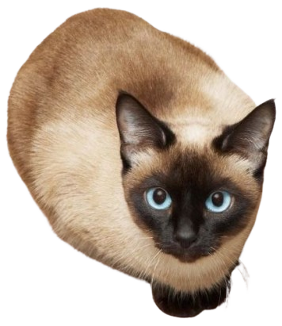

Sobre mí
Cuando llegué a mi casa actual, nadie me quería. Me miraban como un simple intruso. No los culpo. Mi vida hasta entonces había sido dura, llena de peleas por comida y noches frías bajo la lluvia. Mi instinto me decía que no confiara en nadie, así que respondía con bufidos y arañazos a cualquier intento de acercamiento. Pero con el tiempo, esa casa que al principio me parecía ajena comenzó a volverse familiar. Poco a poco, me fui acercando, primero observando desde lejos, luego aceptando un plato de comida, y, antes de darme cuenta, encontré un rincón cálido donde dormir.
Ahora, me llamo Milaneso. Ya no huyo ni me escondo; al contrario, soy el primero en recibir a los de la casa cuando llegan, frotándome contra sus piernas y buscando un lugar en su regazo. Lo que empezó con miradas de desconfianza terminó convirtiéndose en una historia de cariño y lealtad. Aprendí que el amor no siempre llega de inmediato, pero cuando lo hace, transforma hasta al más arisco de los gatos. Esta casa, que un día me pareció extraña, es ahora mi refugio, mi reino, mi hogar.
¡Ven y conoce mis historias!